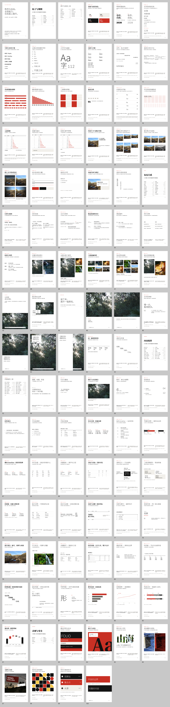
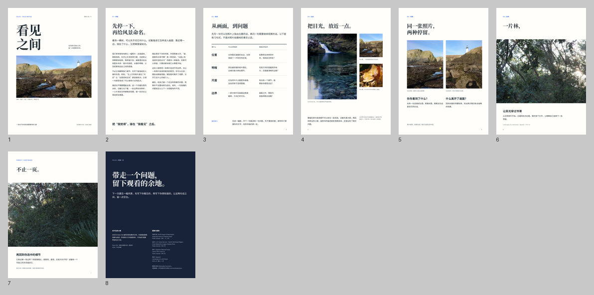
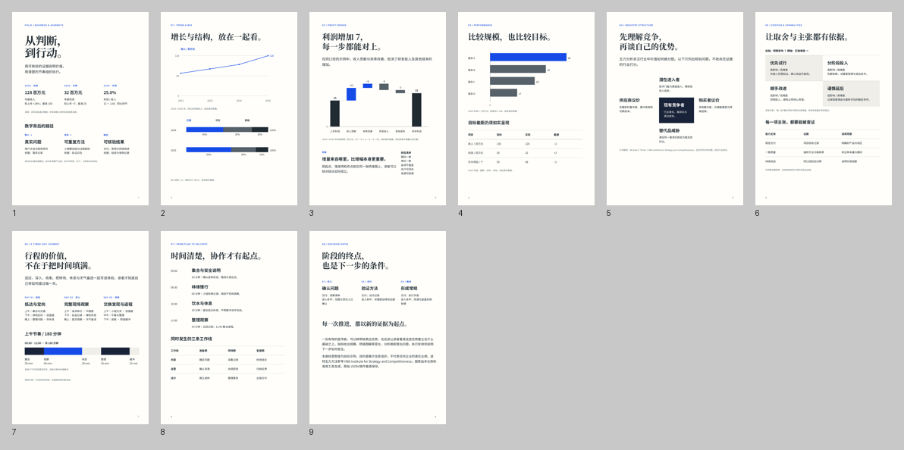

一种强调色，四种表面关系
白、黑和一处强调组成默认语言；浅纸用于需要分组的内容。照片保留原色，嵌套表面会完整恢复文字和线条的对比关系。
纸面
次要文字
重点内容
柔和
次要文字
重点内容
深色
次要文字
重点内容
强调
次要文字
重点内容
fl-surface-dark + fl-text-muted一套系统，两种排印气质
秩序，是自由
发生的地方。
瑞士主义的网格、非对称与留白，成为所有书页共用的底座。
粗衬线与轻无衬线共享字阶。数据、长文和满版摄影共享对齐关系。版式的变化来自内容与比例。
切换同一幅构图 ↓
网格决定关系，字阶决定阅读顺序，留白决定节奏。原子、功能组件与布局可以拆开重组。
白、黑和一处强调组成默认语言；浅纸用于需要分组的内容。照片保留原色，嵌套表面会完整恢复文字和线条的对比关系。
纸面
次要文字
重点内容
柔和
次要文字
重点内容
深色
次要文字
重点内容
强调
次要文字
重点内容
fl-surface-dark + fl-text-mutedbold 用衬线标题，light 用无衬线标题；两者保留既定的字号与字重阶梯。light 的大字越大越轻，小字保持足够字重。数字与正文同族（Inter），字重跟随字号档位。
标题 Noto Serif SC64px / 90046px / 70032px / 70024px / 60020px / 60016px / 40014px / 50013px / 60011px / 600Inter / 900标题 Noto Sans SC64px / 20046px / 25032px / 30024px / 40020px / 40016px / 40014px / 50013px / 60011px / 600Inter / 200六轨是共同的对齐坐标，十二轨用于细分。长文可以 3+3，正文旁栏可以 4+2；空轨也参与构图。
fl-grid fl-cols-6 → fl-span-3 + fl-span-328px 基线延展为九级间距，从 7px 的局部连接到 168px 的章节停顿。内容密度改变，节奏仍有共同刻度。
fl-gap-3 · fl-mt-5 · fl-py-2比例、裁切与焦点独立；原图保持不变。满版、跨页、客观记录与摄影叙事，共用这些原子。
fl-frame fl-ratio-photo fl-focus-center覆盖全部公开类与功能分组；示例演示典型组合，不能替代任意组合的生产检查。按名称、类名或用途查找。
没有匹配的原子。试试更短的类名或选择全部分类。
查看完整原子表、字号下限与可覆盖变量：Folio CSS 使用说明 ↗
切换排印与表面。布局、文案、照片和字号都保持一致，观察真正改变的关系。
轨道、比例、对齐与阅读顺序。每个布局都能拆开，颜色和排印由同一套原子提供。
没有匹配的布局。清空搜索或切换分类。
页眉与索引、图注与尺寸、统计表与时间轴，再扩展到阅读、摄影、行程和经营分析。每个配方都有适用边界与完整 HTML。
从场景查看已覆盖的能力与边界：组件覆盖清单 ↗ · 数据格式与图表生成 ↗
没有匹配的组件。清空搜索或切换分类。
variations.css 的 16 个类合成 8 个配方：字带、裁字、填图字、双色、旋转与交叠、程序图形、导视、色面出血。它们是显式选择，不是每页的装饰；承载信息的正文始终保持完整、可读。
没有匹配的变奏配方。试试更短的关键词。
新样册检验 Swiss 底座与双结构排印；历史样册保留原始版本，供比较构图与业务覆盖。
Folio 2.2 / 当前设计系统
100 页 A4，覆盖 91 个目录项与 353 个公开类。原子、布局、组件、摄影和变奏都能从示例详情跳到对应书页。



这两本历史样册冻结于 Folio 1.1，未随当前 CSS 改变。经营数据为自拟示例，分析框架呈现待核验问题，行程为结构演示。
所有摄影来自项目已有的 CC0 / 公有领域素材。样册素材来源 · 展示页的照片示例使用同一素材库，见 原始登记。网页可缩放预览，印刷检查以最终 PDF 为准。
python3 hb/core/family.py init folio ./my-book --title '我的手册'一份冻结的 CSS，一份可编辑的 HTML。版式可以延展，规则始终有据可循。